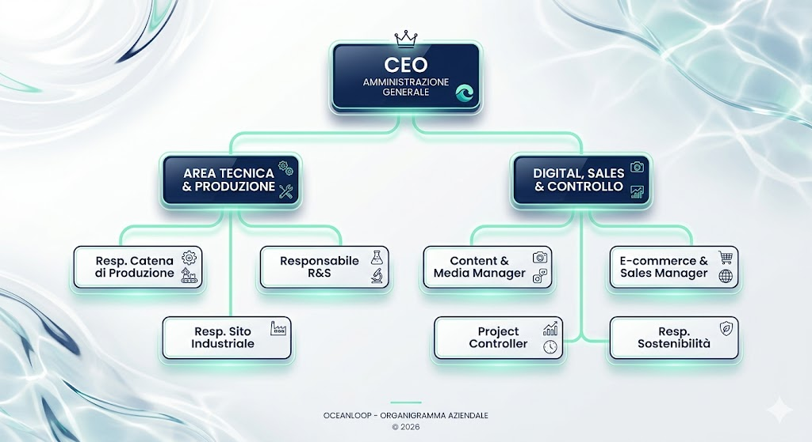

L'Anima di OceanLoop
Dietro ogni passo rigenerato c'è un team di professionisti dedicato alla visione di un futuro senza sprechi.
Dietro ogni passo rigenerato c'è un team di professionisti dedicato alla visione di un futuro senza sprechi.

Responsabile della visione globale, dei rapporti con gli investitori green e della guida strategica del progetto.
Supervisiona il funzionamento dei macchinari e l'efficienza dei cicli produttivi delle calzature.
Sviluppa e testa il filato rigenerato garantendo che mantenga standard di resistenza atletica.
Coordina la sede operativa, la manutenzione del sito e il confezionamento dei prodotti.
Cura lo storytelling visivo, documentando il recupero dei rifiuti e l'autenticità della filiera.
Gestisce i canali di vendita globali e le spedizioni a zero emissioni in tutto il mondo.
Monitora i costi, i tempi PERT/CPM e definisce i margini economici per la sostenibilità del business.
Assicura che ogni processo rispetti gli standard ecologici per l'ottenimento delle certificazioni.